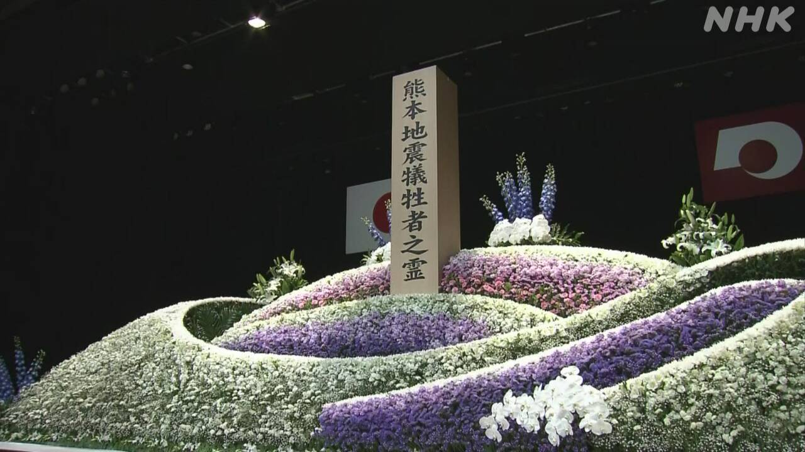
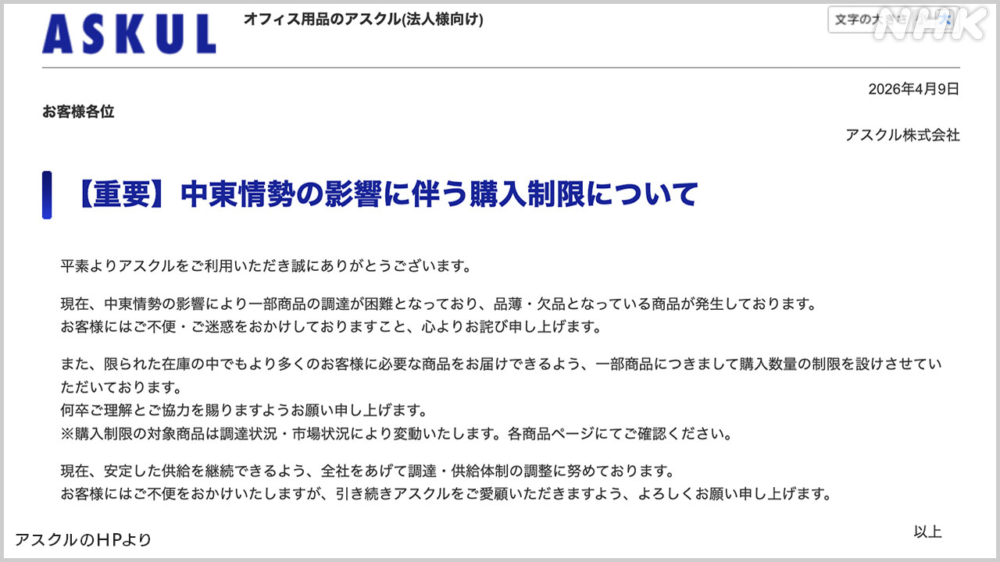
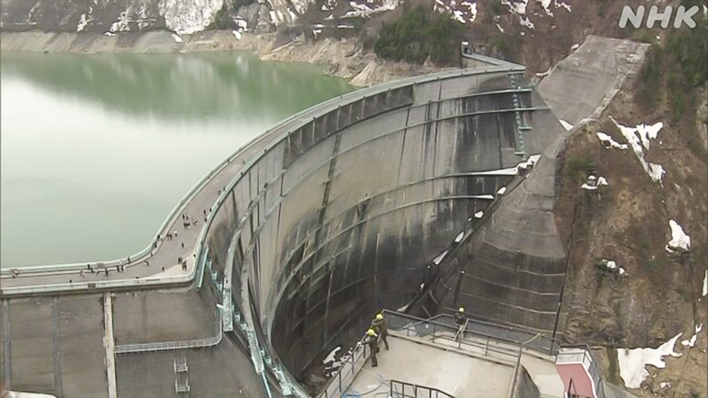

最新ニュース
1️⃣ 京都府の事件 亡くなった小学生の父親を警察が逮捕した
京都府南丹市の山で、亡くなっていた小学生の事件についてです。
南丹市の安達結希さんは、今月13日に、山の中で亡くなっているのが見つかりました。
警察は16日、結希さんの父親の安達優季容疑者を逮捕しました。
警察によると、安達容疑者は、亡くなった結希さんを山に運んで隠した疑いがあります。そして、「私がやったことに間違いありません」と話して、認めています。
結希さんを殺したことについても認めているようです。
2️⃣ 熊本地震から10年 県と全部の市などが初めて一緒に祈った

10年前の2016年4月、熊本県でとても大きい地震が2回ありました。
2回目の地震から、16日で10年になります。この地震では、熊本県と大分県で278人が亡くなりました。
16日、熊本県と県にある全部の市や町などが、地震のあと初めて一緒に、亡くなった人たちのために祈る式を行いました。260人くらいが集まって、1分間、静かに祈りました。そして、地震のとき小学生だった4人が「避難所でやさしくしてもらって、安心することができました。今度は私たちが助けることができるようになりたいと思います」と話しました。
3️⃣ 病院で使う手袋やごみの袋が少なくなっている

アメリカなどとイランの戦いで、原油の輸入が難しくなっています。この影響で、仕事や生活で使う物が少なくなっています。
アスクルという会社は、インターネットでいろいろな物を売っています。病院で使う手袋や、ごみの袋などが、少なくなっています。このため、1人が買うことができる数を決めている物もあります。アスクルは、ウェブサイトを見てほしいと言っています。
そして、ライオンという会社は、今年の夏から、新しい洗剤を売る予定でした。洗濯の洗剤には石油からできる「ナフサ」を使っています。しかし、イランの問題がどうなるかわからないため、新しい洗剤は予定よりあとに売ることを決めました。
4️⃣ 立山黒部アルペンルート 春が来て通ることができるようになった

春を感じるニュースです。
「立山黒部アルペンルート」は、長野県と富山県の間の37kmぐらいの道です。
山の中にあって、冬の間は、たくさんの雪で通ることができませんでした。
春が来て、雪の片づけが終わって、15日から通ることができるようになりました。
愛知県から来た男性は「最初の日に来ることができて良かったです。すばらしい景色を楽しみたいです」と話していました。
- 〜について
- 〜ている / 〜でいる
- 〜中
- 〜によると
- 〜がある / 〜がいる
- 〜こと
- 〜ようだ / 〜みたいだ
- 〜ても / 〜でも
- 〜になる
- 〜から
- 〜や〜など
- 〜ため(に)
- 〜ため
- 〜など
- 〜後 / 〜あと
- 〜くらい / 〜ぐらい
- 〜ことができる
- 〜てもらう / 〜でもらう
- 〜ところ
- 〜ように
- 〜と思う
- 〜ようになる
- 〜という
- 〜予定
- 〜より
- 〜しか〜ない
- 〜らしい
vebaev.github.io
Generated: 2026-04-16 13:50:13 UTC